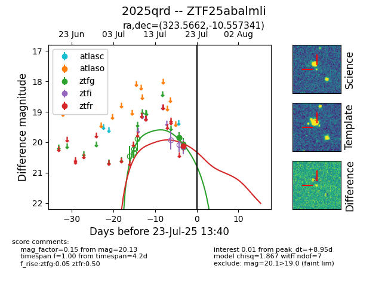

Target ZTF25abalmli at 2025-07-23 13:40, see:
FINK: fink-portal.org/ZTF25abalmli
Lasair: lasair-ztf.lsst.ac.uk/objects/ZTF25abalmli
ALeRCE: alerce.online/object/ZTF25abalmli
TNS: wis-tns.org/object/2025qrd
YSE: ziggy.ucolick.org/yse/transient_detail/2025qrd
alt names
ZTF25abalmli (ztf,fink)
2025qrd (tns,yse)
coordinates:
equatorial (ra, dec) = (323.5662,-10.55734)
galactic (l, b) = (42.7742,-40.85586)
photometry
last ztfg=20.16, ztfr=20.13
4 ztfg, 1 ztfr detections
